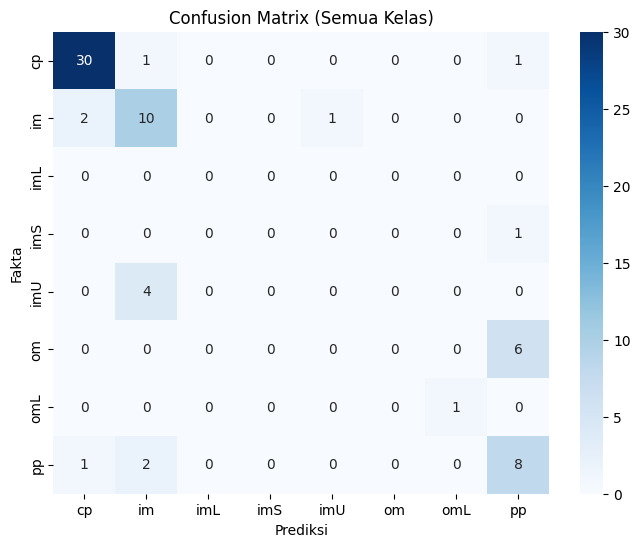
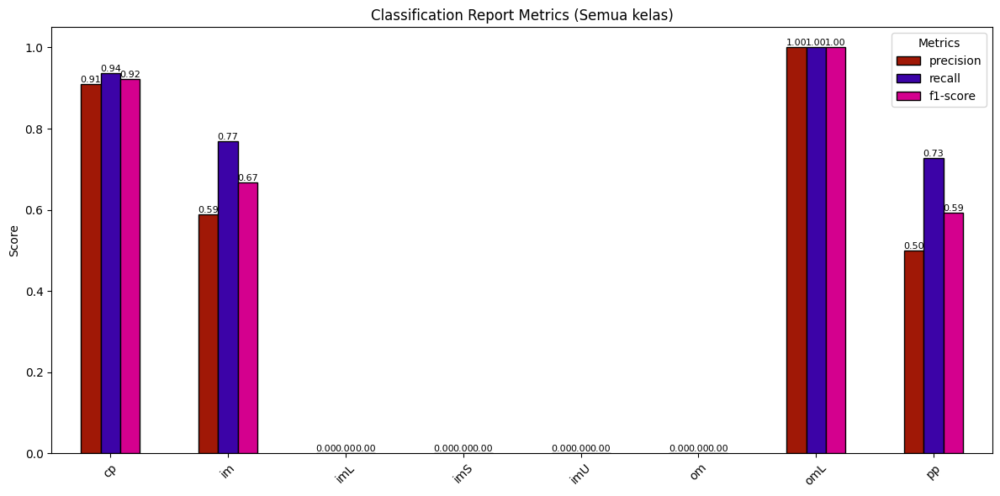
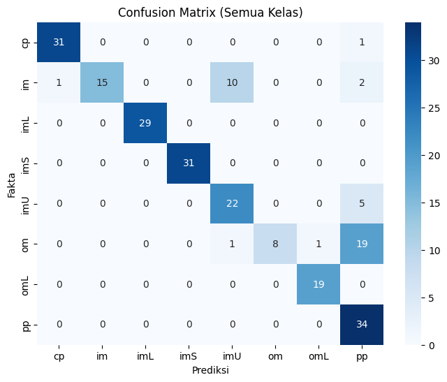
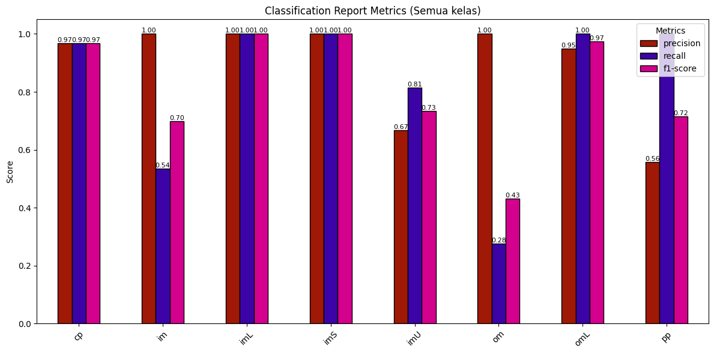
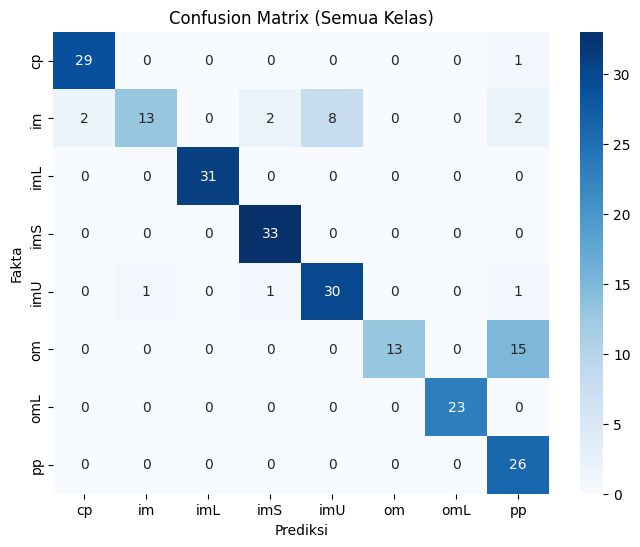
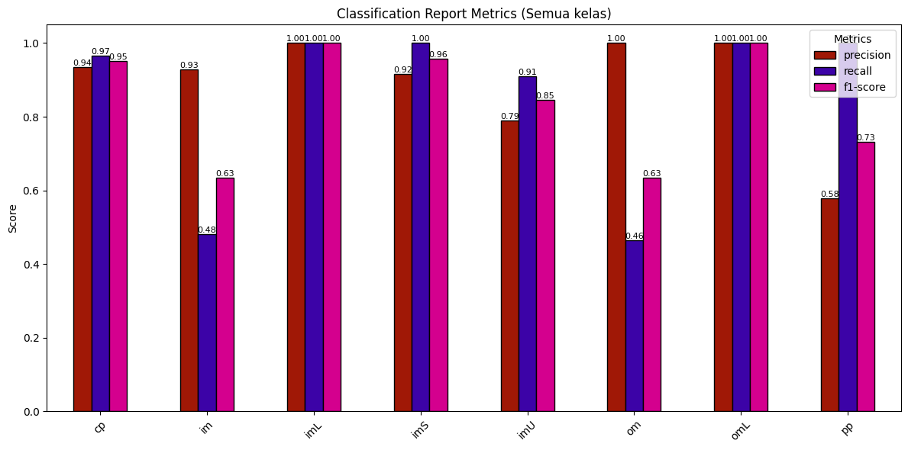
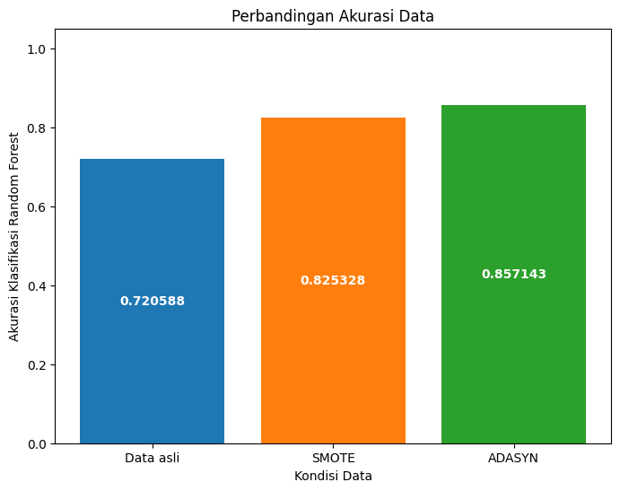
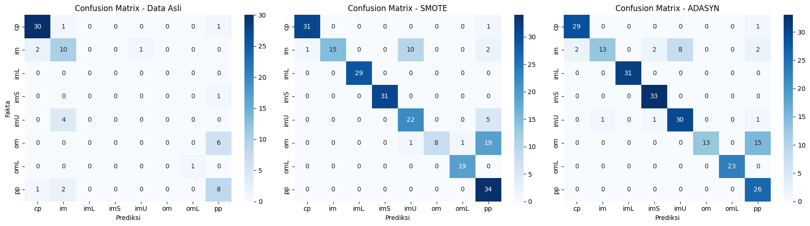

Naive Bayes Classifier (ECOLI)#
Ini adalah tahap modeling klasifikasi data ecoli menggunakan metode Naive Bayes dengan kondisi
Data ecoli yang belum di lakukan oversampling
Data ecoli yang sudah di lakukan oversampling menggunakan SMOTE
Data ecoli yang sudah di lakukan oversampling menggunakan ADASYN
kemudian di bandingkan apakah ada penambahan akurasi saat setelah data di lakukan oversampling
Library yang digunakan#
import pandas as pd
from sklearn.model_selection import train_test_split
from sklearn.naive_bayes import GaussianNB
from sklearn.metrics import accuracy_score, classification_report, confusion_matrix
from sqlalchemy import create_engine
import matplotlib.pyplot as plt
import seaborn as sns
import numpy as np
C:\Users\USERB-PC\AppData\Local\Programs\Python\Python39\lib\site-packages\scipy\__init__.py:159: UserWarning: A NumPy version >=1.21.6 and <1.28.0 is required for this version of SciPy (detected version 2.0.2)
warnings.warn(f"A NumPy version >={np_minversion} and <{np_maxversion}"
A module that was compiled using NumPy 1.x cannot be run in
NumPy 2.0.2 as it may crash. To support both 1.x and 2.x
versions of NumPy, modules must be compiled with NumPy 2.0.
Some module may need to rebuild instead e.g. with 'pybind11>=2.12'.
If you are a user of the module, the easiest solution will be to
downgrade to 'numpy<2' or try to upgrade the affected module.
We expect that some modules will need time to support NumPy 2.
Traceback (most recent call last): File "C:\Users\USERB-PC\AppData\Local\Programs\Python\Python39\lib\runpy.py", line 197, in _run_module_as_main
return _run_code(code, main_globals, None,
File "C:\Users\USERB-PC\AppData\Local\Programs\Python\Python39\lib\runpy.py", line 87, in _run_code
exec(code, run_globals)
File "C:\Users\USERB-PC\AppData\Roaming\Python\Python39\site-packages\ipykernel_launcher.py", line 18, in <module>
app.launch_new_instance()
File "C:\Users\USERB-PC\AppData\Local\Programs\Python\Python39\lib\site-packages\traitlets\config\application.py", line 1075, in launch_instance
app.start()
File "C:\Users\USERB-PC\AppData\Roaming\Python\Python39\site-packages\ipykernel\kernelapp.py", line 739, in start
self.io_loop.start()
File "C:\Users\USERB-PC\AppData\Local\Programs\Python\Python39\lib\site-packages\tornado\platform\asyncio.py", line 211, in start
self.asyncio_loop.run_forever()
File "C:\Users\USERB-PC\AppData\Local\Programs\Python\Python39\lib\asyncio\base_events.py", line 596, in run_forever
self._run_once()
File "C:\Users\USERB-PC\AppData\Local\Programs\Python\Python39\lib\asyncio\base_events.py", line 1890, in _run_once
handle._run()
File "C:\Users\USERB-PC\AppData\Local\Programs\Python\Python39\lib\asyncio\events.py", line 80, in _run
self._context.run(self._callback, *self._args)
File "C:\Users\USERB-PC\AppData\Roaming\Python\Python39\site-packages\ipykernel\kernelbase.py", line 545, in dispatch_queue
await self.process_one()
File "C:\Users\USERB-PC\AppData\Roaming\Python\Python39\site-packages\ipykernel\kernelbase.py", line 534, in process_one
await dispatch(*args)
File "C:\Users\USERB-PC\AppData\Roaming\Python\Python39\site-packages\ipykernel\kernelbase.py", line 437, in dispatch_shell
await result
File "C:\Users\USERB-PC\AppData\Roaming\Python\Python39\site-packages\ipykernel\ipkernel.py", line 362, in execute_request
await super().execute_request(stream, ident, parent)
File "C:\Users\USERB-PC\AppData\Roaming\Python\Python39\site-packages\ipykernel\kernelbase.py", line 778, in execute_request
reply_content = await reply_content
File "C:\Users\USERB-PC\AppData\Roaming\Python\Python39\site-packages\ipykernel\ipkernel.py", line 449, in do_execute
res = shell.run_cell(
File "C:\Users\USERB-PC\AppData\Roaming\Python\Python39\site-packages\ipykernel\zmqshell.py", line 549, in run_cell
return super().run_cell(*args, **kwargs)
File "C:\Users\USERB-PC\AppData\Local\Programs\Python\Python39\lib\site-packages\IPython\core\interactiveshell.py", line 3048, in run_cell
result = self._run_cell(
File "C:\Users\USERB-PC\AppData\Local\Programs\Python\Python39\lib\site-packages\IPython\core\interactiveshell.py", line 3103, in _run_cell
result = runner(coro)
File "C:\Users\USERB-PC\AppData\Local\Programs\Python\Python39\lib\site-packages\IPython\core\async_helpers.py", line 129, in _pseudo_sync_runner
coro.send(None)
File "C:\Users\USERB-PC\AppData\Local\Programs\Python\Python39\lib\site-packages\IPython\core\interactiveshell.py", line 3308, in run_cell_async
has_raised = await self.run_ast_nodes(code_ast.body, cell_name,
File "C:\Users\USERB-PC\AppData\Local\Programs\Python\Python39\lib\site-packages\IPython\core\interactiveshell.py", line 3490, in run_ast_nodes
if await self.run_code(code, result, async_=asy):
File "C:\Users\USERB-PC\AppData\Local\Programs\Python\Python39\lib\site-packages\IPython\core\interactiveshell.py", line 3550, in run_code
exec(code_obj, self.user_global_ns, self.user_ns)
File "C:\Users\USERB-PC\AppData\Local\Temp\ipykernel_13904\2658605108.py", line 2, in <module>
from sklearn.model_selection import train_test_split
File "C:\Users\USERB-PC\AppData\Local\Programs\Python\Python39\lib\site-packages\sklearn\__init__.py", line 82, in <module>
from .base import clone
File "C:\Users\USERB-PC\AppData\Local\Programs\Python\Python39\lib\site-packages\sklearn\base.py", line 17, in <module>
from .utils import _IS_32BIT
File "C:\Users\USERB-PC\AppData\Local\Programs\Python\Python39\lib\site-packages\sklearn\utils\__init__.py", line 17, in <module>
from scipy.sparse import issparse
File "C:\Users\USERB-PC\AppData\Local\Programs\Python\Python39\lib\site-packages\scipy\sparse\__init__.py", line 274, in <module>
from ._csr import *
File "C:\Users\USERB-PC\AppData\Local\Programs\Python\Python39\lib\site-packages\scipy\sparse\_csr.py", line 11, in <module>
from ._sparsetools import (csr_tocsc, csr_tobsr, csr_count_blocks,
---------------------------------------------------------------------------
AttributeError Traceback (most recent call last)
AttributeError: _ARRAY_API not found
---------------------------------------------------------------------------
ImportError Traceback (most recent call last)
Cell In[1], line 2
1 import pandas as pd
----> 2 from sklearn.model_selection import train_test_split
3 from sklearn.naive_bayes import GaussianNB
4 from sklearn.metrics import accuracy_score, classification_report, confusion_matrix
File ~\AppData\Local\Programs\Python\Python39\lib\site-packages\sklearn\__init__.py:82
80 from . import _distributor_init # noqa: F401
81 from . import __check_build # noqa: F401
---> 82 from .base import clone
83 from .utils._show_versions import show_versions
85 __all__ = [
86 "calibration",
87 "cluster",
(...)
128 "show_versions",
129 ]
File ~\AppData\Local\Programs\Python\Python39\lib\site-packages\sklearn\base.py:17
15 from . import __version__
16 from ._config import get_config
---> 17 from .utils import _IS_32BIT
18 from .utils._set_output import _SetOutputMixin
19 from .utils._tags import (
20 _DEFAULT_TAGS,
21 )
File ~\AppData\Local\Programs\Python\Python39\lib\site-packages\sklearn\utils\__init__.py:17
15 import warnings
16 import numpy as np
---> 17 from scipy.sparse import issparse
19 from .murmurhash import murmurhash3_32
20 from .class_weight import compute_class_weight, compute_sample_weight
File ~\AppData\Local\Programs\Python\Python39\lib\site-packages\scipy\sparse\__init__.py:274
271 import warnings as _warnings
273 from ._base import *
--> 274 from ._csr import *
275 from ._csc import *
276 from ._lil import *
File ~\AppData\Local\Programs\Python\Python39\lib\site-packages\scipy\sparse\_csr.py:11
9 from ._matrix import spmatrix, _array_doc_to_matrix
10 from ._base import _spbase, sparray
---> 11 from ._sparsetools import (csr_tocsc, csr_tobsr, csr_count_blocks,
12 get_csr_submatrix)
13 from ._sputils import upcast
15 from ._compressed import _cs_matrix
ImportError: numpy.core.multiarray failed to import
Modeling Klasifikasi menggunakan Naive bayes pada data ecoli sebelum di oversampling#
engine = create_engine("mysql+pymysql://root:@localhost/psd")
query = "SELECT mcg, gvh, lip, chg, aac, alm1, alm2, localization_class FROM ecoli"
df = pd.read_sql(query, engine)
X = df.drop(columns=["localization_class"])
y = df["localization_class"]
df
X_train, X_test, y_train, y_test = train_test_split(
X, y, test_size=0.2, random_state=42
)
nb = GaussianNB()
nb.fit(X_train, y_train)
prediksi = nb.predict(X_test)
print(f"accuracy_score : {accuracy_score(y_test, prediksi)}")
print("Classification Report:\n", classification_report(y_test, prediksi, zero_division=0))
# confuison matrix
labels = np.unique(np.concatenate([y_train, y_test]))
cm = confusion_matrix(y_test, prediksi, labels=labels)
plt.figure(figsize=(8,6))
sns.heatmap(cm, annot=True, fmt="d", cmap="Blues",
xticklabels=labels, yticklabels=labels)
plt.xlabel("Prediksi")
plt.ylabel("Fakta")
plt.title("Confusion Matrix (Semua Kelas)")
plt.show()
all_labels = np.unique(np.concatenate([y_train, y_test]))
report = classification_report(
y_test, prediksi, labels=all_labels,
output_dict=True, zero_division=0
)
df_report = pd.DataFrame(report).transpose()
metrics_df = df_report[['precision','recall','f1-score']].iloc[:-3]
# warna diagram batang
ax = metrics_df.plot(
kind='bar',
figsize=(12,6),
color=["#a01806", "#3c03a7", "#d4008e"],
edgecolor='black'
)
plt.title("Classification Report Metrics (Semua kelas)")
plt.ylabel("Score")
plt.ylim(0,1.05)
plt.xticks(rotation=45)
# diagram batang
for p in ax.patches:
value = f"{p.get_height():.2f}"
x = p.get_x() + p.get_width()/2
y = p.get_height()
ax.annotate(value, (x, y), ha='center', va='bottom', fontsize=8, rotation=0)
plt.legend(title="Metrics")
plt.tight_layout()
plt.show()
accuracy_score : 0.7205882352941176
Classification Report:
precision recall f1-score support
cp 0.91 0.94 0.92 32
im 0.59 0.77 0.67 13
imS 0.00 0.00 0.00 1
imU 0.00 0.00 0.00 4
om 0.00 0.00 0.00 6
omL 1.00 1.00 1.00 1
pp 0.50 0.73 0.59 11
accuracy 0.72 68
macro avg 0.43 0.49 0.45 68
weighted avg 0.64 0.72 0.67 68


Modeling Klasifikasi menggunakan Naive bayes pada data Ecoli setelah di Oversampling menggunakan SMOTE#
data_smote = pd.read_csv("../oversampling/hasil_oversampling_SMOTE.csv")
x_smote = data_smote.drop(columns=["class"])
y_smote = data_smote["class"]
X_train_smote, X_test_smote, y_train_smote, y_test_smote = train_test_split(
x_smote, y_smote, test_size=0.2, random_state=42
)
nb = GaussianNB()
nb.fit(X_train_smote, y_train_smote)
prediksi_smote = nb.predict(X_test_smote)
print(f"accuracy_score : {accuracy_score(y_test_smote, prediksi_smote)}")
print("Classification Report:\n", classification_report(y_test_smote, prediksi_smote, zero_division=0))
# confuison matrix
labels = np.unique(np.concatenate([y_train_smote, y_test_smote]))
cm = confusion_matrix(y_test_smote, prediksi_smote, labels=labels)
plt.figure(figsize=(8,6))
sns.heatmap(cm, annot=True, fmt="d", cmap="Blues",
xticklabels=labels, yticklabels=labels)
plt.xlabel("Prediksi")
plt.ylabel("Fakta")
plt.title("Confusion Matrix (Semua Kelas)")
plt.show()
all_labels = np.unique(np.concatenate([y_train_smote, y_test_smote]))
report = classification_report(
y_test_smote, prediksi_smote, labels=all_labels,
output_dict=True, zero_division=0
)
df_report = pd.DataFrame(report).transpose()
metrics_df = df_report[['precision','recall','f1-score']].iloc[:-3]
# warna diagram batang
ax = metrics_df.plot(
kind='bar',
figsize=(12,6),
color=["#a01806", "#3c03a7", "#d4008e"], # biru, oranye, hijau
edgecolor='black'
)
plt.title("Classification Report Metrics (Semua kelas)")
plt.ylabel("Score")
plt.ylim(0,1.05)
plt.xticks(rotation=45)
# diagram batang
for p in ax.patches:
value = f"{p.get_height():.2f}"
x = p.get_x() + p.get_width()/2
y = p.get_height()
ax.annotate(value, (x, y), ha='center', va='bottom', fontsize=8, rotation=0)
plt.legend(title="Metrics")
plt.tight_layout()
plt.show()
accuracy_score : 0.8253275109170306
Classification Report:
precision recall f1-score support
cp 0.97 0.97 0.97 32
im 1.00 0.54 0.70 28
imL 1.00 1.00 1.00 29
imS 1.00 1.00 1.00 31
imU 0.67 0.81 0.73 27
om 1.00 0.28 0.43 29
omL 0.95 1.00 0.97 19
pp 0.56 1.00 0.72 34
accuracy 0.83 229
macro avg 0.89 0.82 0.82 229
weighted avg 0.89 0.83 0.81 229


Modeling Klasifikasi menggunakan Naive bayes pada data ecoli setelah di oversampling menggunakan ADASYN#
data_adasyn = pd.read_csv("../oversampling/hasil_oversampling_ADASYN.csv")
x_adasyn = data_adasyn.drop(columns=["class"])
y_adasyn = data_adasyn["class"]
X_train_adasyn, X_test_adasyn, y_train_adasyn, y_test_adasyn = train_test_split(
x_adasyn, y_adasyn, test_size=0.2, random_state=42
)
nb = GaussianNB()
nb.fit(X_train_adasyn, y_train_adasyn)
prediksi_adasyn = nb.predict(X_test_adasyn)
print(f"accuracy_score : {accuracy_score(y_test_adasyn, prediksi_adasyn)}")
print("akurasi lengkap:\n", classification_report(y_test_adasyn, prediksi_adasyn))
# confuison matrix
labels = np.unique(np.concatenate([y_train_adasyn, y_test_adasyn]))
cm = confusion_matrix(y_test_adasyn, prediksi_adasyn, labels=labels)
plt.figure(figsize=(8,6))
sns.heatmap(cm, annot=True, fmt="d", cmap="Blues",
xticklabels=labels, yticklabels=labels)
plt.xlabel("Prediksi")
plt.ylabel("Fakta")
plt.title("Confusion Matrix (Semua Kelas)")
plt.show()
all_labels = np.unique(np.concatenate([y_train_adasyn, y_test_adasyn]))
report = classification_report(
y_test_adasyn, prediksi_adasyn, labels=all_labels,
output_dict=True, zero_division=0
)
df_report = pd.DataFrame(report).transpose()
metrics_df = df_report[['precision','recall','f1-score']].iloc[:-3]
# warna diagram batang
ax = metrics_df.plot(
kind='bar',
figsize=(12,6),
color=["#a01806", "#3c03a7", "#d4008e"], # biru, oranye, hijau
edgecolor='black'
)
plt.title("Classification Report Metrics (Semua kelas)")
plt.ylabel("Score")
plt.ylim(0,1.05)
plt.xticks(rotation=45)
# diagram batang
for p in ax.patches:
value = f"{p.get_height():.2f}"
x = p.get_x() + p.get_width()/2
y = p.get_height()
ax.annotate(value, (x, y), ha='center', va='bottom', fontsize=8, rotation=0)
plt.legend(title="Metrics")
plt.tight_layout()
plt.show()
accuracy_score : 0.8571428571428571
akurasi lengkap:
precision recall f1-score support
cp 0.94 0.97 0.95 30
im 0.93 0.48 0.63 27
imL 1.00 1.00 1.00 31
imS 0.92 1.00 0.96 33
imU 0.79 0.91 0.85 33
om 1.00 0.46 0.63 28
omL 1.00 1.00 1.00 23
pp 0.58 1.00 0.73 26
accuracy 0.86 231
macro avg 0.89 0.85 0.84 231
weighted avg 0.89 0.86 0.85 231


Perbandingan akurasi antara data sebelum di oversampling dan sesudah#
# data yang sebelum di overesampling
akurasi = accuracy_score(y_test, prediksi)
# data yang sudah di oversampling menggunakan SMOTE
akurasi_smote = accuracy_score(y_test_smote, prediksi_smote)
# data yang sudah di oversampling menggunakan ADASYN
akurasi_adasyn = accuracy_score(y_test_adasyn, prediksi_adasyn)
label = ['Data asli', 'SMOTE', 'ADASYN']
temp = [akurasi, akurasi_smote, akurasi_adasyn]
fig, ax = plt.subplots(figsize=(8,6))
bc = ax.bar(label, temp, color=['#1f77b4','#ff7f0e','#2ca02c'])
ax.bar_label(bc, label_type='center', color='w', fontweight='bold')
ax.set(
xlabel='Kondisi Data',
ylabel='Akurasi Klasifikasi Random Forest',
title='Perbandingan Akurasi Data'
)
ax.set_ylim(0, 1.05)
plt.show()
fig, axes = plt.subplots(1, 3, figsize=(18, 5))
# Data asli
labels = np.unique(np.concatenate([y_train, y_test]))
cm = confusion_matrix(y_test, prediksi, labels=labels)
sns.heatmap(cm, annot=True, fmt="d", cmap="Blues",
xticklabels=labels, yticklabels=labels, ax=axes[0])
axes[0].set_title("Confusion Matrix - Data Asli")
axes[0].set_xlabel("Prediksi")
axes[0].set_ylabel("Fakta")
# Data SMOTE
labels = np.unique(np.concatenate([y_train_smote, y_test_smote]))
cm = confusion_matrix(y_test_smote, prediksi_smote, labels=labels)
sns.heatmap(cm, annot=True, fmt="d", cmap="Blues",
xticklabels=labels, yticklabels=labels, ax=axes[1])
axes[1].set_title("Confusion Matrix - SMOTE")
axes[1].set_xlabel("Prediksi")
axes[1].set_ylabel("")
# Data ADASYN
labels = np.unique(np.concatenate([y_train_adasyn, y_test_adasyn]))
cm = confusion_matrix(y_test_adasyn, prediksi_adasyn, labels=labels)
sns.heatmap(cm, annot=True, fmt="d", cmap="Blues",
xticklabels=labels, yticklabels=labels, ax=axes[2])
axes[2].set_title("Confusion Matrix - ADASYN")
axes[2].set_xlabel("Prediksi")
axes[2].set_ylabel("")
plt.tight_layout()
plt.show()


Berdasarkan grafik perbandingan akurasi klasifikasi Naive Bayes, terlihat bahwa pada data asli akurasi hanya mencapai 72,0%, namun setelah dilakukan oversampling dengan SMOTE akurasi meningkat menjadi 82,5%, dan dengan ADASYN akurasi meningkat lebih tinggi lagi hingga 85,7%. Hal ini menunjukkan bahwa penggunaan teknik oversampling, khususnya ADASYN, mampu memberikan hasil yang lebih baik dibandingkan data asli, sehingga model dapat mengatasi masalah ketidakseimbangan kelas dengan lebih efektif.